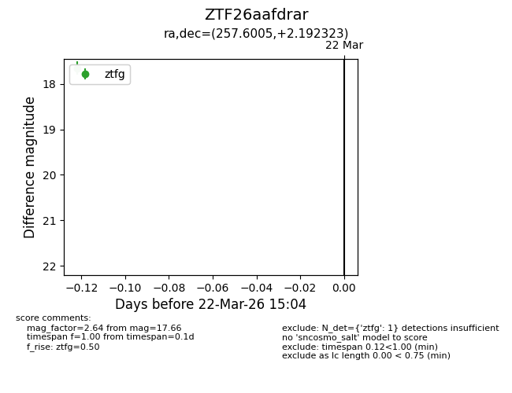
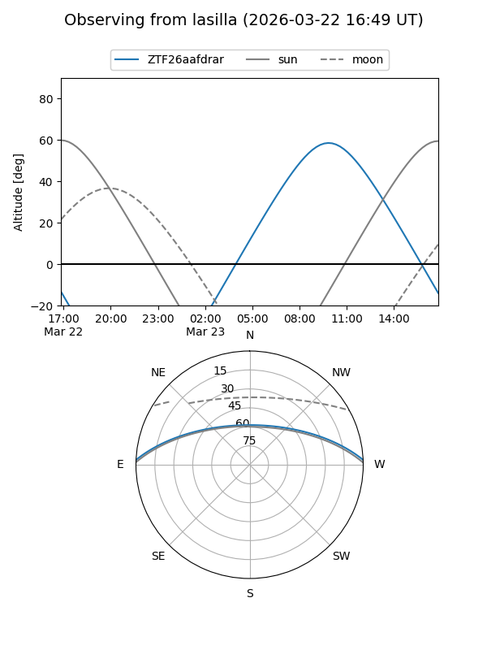
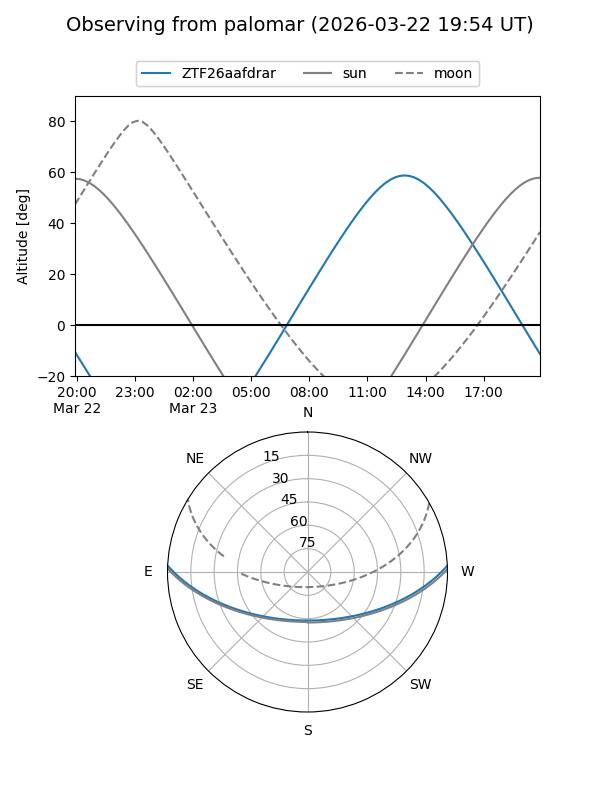

ZTF26aafdrar
Target ZTF26aafdrar at 2026-03-22 15:06
Aliases and brokers:
FINK: link
Lasair: link
ALeRCE: link
alt names
ZTF26aafdrar (ztf,fink_ztf)
Coordinates:
equatorial (ra, dec) = 257.6005,+2.19232
equatorial (HMS+DMS) = 17:10:24.13,+02:11:32.36
galactic (l, b) = (22.8684,+23.38653)
Flags:
Photometry:
last ztfg=17.66
1 ztfg detections
Lightcurve

Visibility


Additional plots